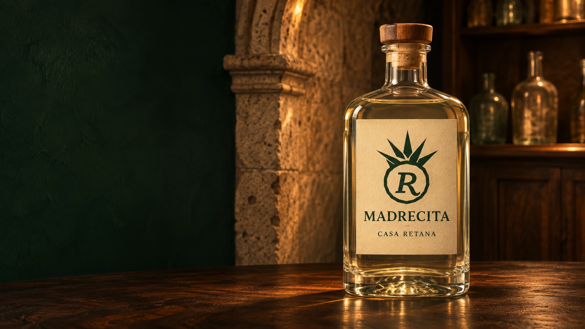

Reserva Retana
La botella de la casa lleva la R de la familia en el corazón del agave. Bajo el nombre «Reserva Retana» se lee «Madrecita», la dedicatoria de Jesús a su mamá. El papel marfil y la madera del tapón retoman los tonos de la piedra y los estantes de la cava de Jesús.
La tierra que inspira el diseño · Verla en la barra 3D · Verla en la mesa 3D

Primera muestra
- Envase propuesto
- Botella de catálogo de 750 ml, de vidrio transparente, cuerpo rectangular, cantos suaves y cara frontal plana.
- Cierre
- Tapón con cabeza de madera. Seleccionar el diámetro y el inserto al elegir la boca del envase.
- Etiqueta
- Prueba frontal de 62 × 76 mm sobre papel marfil autoadherible, impresa en verde. La medida se ajustará a la zona plana de la botella elegida.

Del diseño al vidrio
Para la primera cotización, pedir al proveedor un envase de catálogo, su plano y el cierre compatible. Imprimir la etiqueta a tamaño real, colocarla en la muestra y revisar que asiente sin arrugas, que el tapón ajuste y que la R se lea desde el estante.
El render muestra una propuesta. Jesús y el productor definirán el contenido y la información de la contraetiqueta antes de preparar el arte comercial.